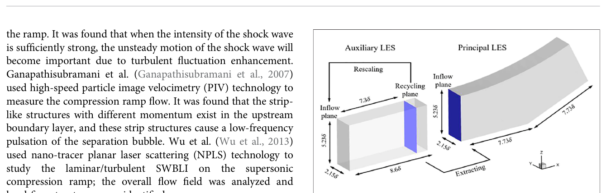
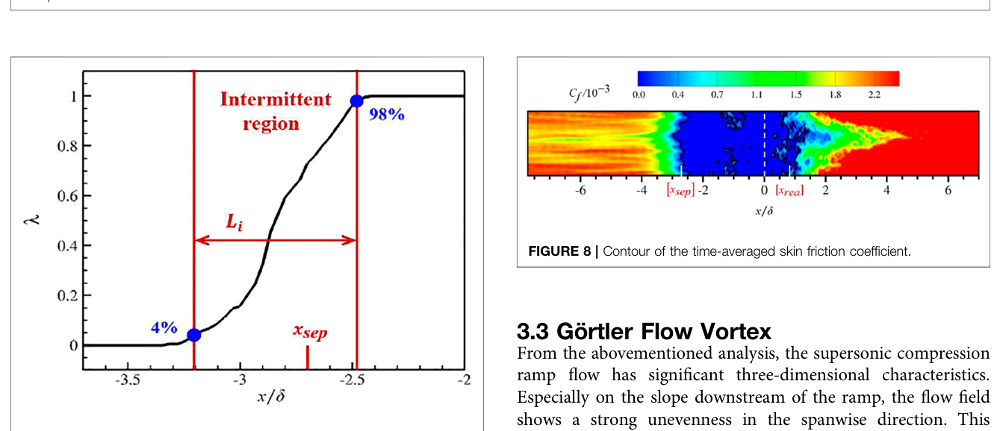
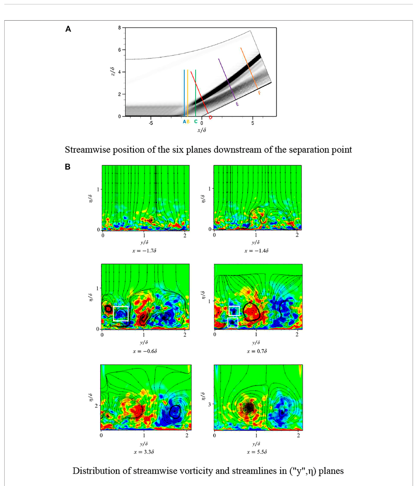
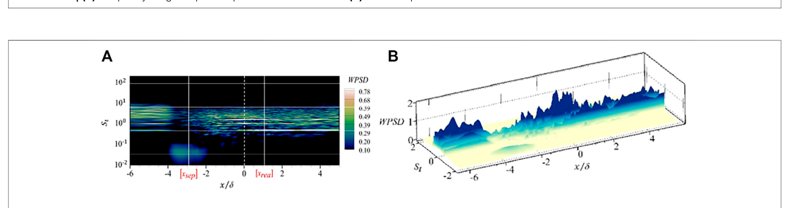

01中文摘要
采用大涡模拟研究来流马赫2.9、24°压缩拐角的激波/湍流边界层干扰。以回收/重标方法生成入口湍流，通过涡识别和数值纹影研究干扰区激波结构与边界层流动，分析不同流向位置的湍动能和雷诺正应力分布。结果显示，激波与边界层干扰后再附边界层呈强各向异性；用间歇因子和功率谱分析分离激波的大尺度非定常运动，发现激波围绕平均分离位置摆动，运动尺度约为入口边界层厚度的72%，功率谱显示分离区存在低频不稳定。
原始摘要（英文/原文）
A large eddy simulation (LES) is conducted to investigate shock wave/turbulent boundary layer interaction in a 24° compression ramp at a high inlet Mach number of M a = 2.9. The recycling/rescaling Method is used as the inflow turbulence generation technique. The shock wave structure and boundary layer flow in the interaction region are studied by flow visualization methods, such as vortex recognition and numerical schlieren. The distributions of turbulent kinetic energy and Reynolds normal stresses at different streamwise locations are analyzed. The results show that a strong anisotropy turbulent flow appears in the reattached boundary layer after the interaction of the shock wave. The large-scale unsteady motion of the separation shock wave is analyzed by using the intermittent factor and power spectrum. It is found that the shock moves around the averaged separation position, and the length scale is equal to 72% of the inlet boundary layer thickness. The power spectrum analysis reveals the existence of low-frequency instability in the separation region.
02阅读说明
数值模拟（LES）研究。材料为10页期刊全文（Frontiers in Energy Research 10:854019, 2022），含Figure 1–13与Table 1；抓取图件齐全，正文与图注可读。公式均为行内定义式，已用PDF第4—5页核对间歇因子与湍动能定义。信息完整度较高，但来流雷诺数、边界层厚度绝对值、网格无关性验证等未给出，公式无编号。 文章类型：期刊
03一句话核心与三句话摘要
24°压缩拐角Ma2.9 LES：分离激波绕均值分离点振荡0.72δ，低频St≈0.04，并出现Görtler涡。
- 高超声速/超声速压缩拐角SWBLI中，分离激波的非定常运动、Görtler类涡与低频不稳定之间的定量联系仍缺少精细LES分析；本文以24°拐角、Ma=2.9为对象。 AI概括
- 采用回收/重标定入口湍流LES，得到x_sep=-2.7δ、x_rea=0.8δ，激波间歇区为-3.2δ≤x≤-2.48δ（Li=0.72δ），平均分离点低频特征频率St≈0.04，上游湍流边界层峰值约St≈3。 原文明确
- 作者认为激波运动由分离泡脉动驱动，入口展向摩阻分布锁定下游Görtler涡位置，低频不稳定局限于平均分离点附近。 AI概括
04核心内容清单
| 要点 | 类型 | 重要性 | 原文依据 | 属性 |
|---|---|---|---|---|
| 以24°压缩拐角、Ma=2.9为对象开展LES，入口采用recycling/rescaling湍流生成技术，计算域以入口δ无量纲化。 | 方法 | A | 第1、3页；Fig. 1 | 原文明确 |
| 数值格式为Roe+五阶WENO-ZQ+六阶中心差分+三阶TVD RK，动态亚格子模型；网格505×89×112，首层z+≈1。 | 方法 | B | 第2—3页 | 原文明确 |
| 平均分离点x_sep=-2.7δ、再附点x_rea=0.8δ；上游压力/Cf与实验和DNS吻合，下游压力略高。 | 结果 | A | 第4页；Fig. 2 | 原文明确 |
| 大尺度涡穿过激波根部时破碎，激波根部变形、激波面沿展向皱褶，交互区呈显著三维特征。 | 现象 | A | 第4页；Fig. 3 | 原文明确 |
| 交互后湍动能迅速增大并在斜坡下游达峰，再附边界层呈强各向异性；R22在斜坡附近呈双峰。 | 现象 | A | 第4—5页；Figs. 5–6 | 原文明确 |
| 分离激波间歇运动范围为-3.2δ≤x≤-2.48δ，间歇区长度Li=0.72δ，约为入口边界层厚度的72%，绕平均分离点运动。 | 定量结果 | A | 第1页摘要、第5页；Fig. 7 | 原文明确 |
| 再附区Cf呈“V”形，由Görtler涡对造成；涡对中心位于y=1.2δ，再附后大涡对占据约2δ展宽并呈肾形。 | 现象/机制 | A | 第5—7页；Figs. 8–10 | 原文明确 |
| 入口展向Cf低值区与下游Görtler涡展向位置高度重合，入口展向摩阻分布对下游涡位置有锁定作用。 | 机制 | B | 第7页；Fig. 10 | 原文明确 |
| 平均分离点壁压谱出现St≈0.04的低频峰，与Dussauge等总结的0.02–0.05一致；上游湍流边界层峰值约St≈3。 | 定量结果 | A | 第8—9页；Figs. 11–12 | 原文明确 |
| 低频不稳定主要局限于平均分离点附近，下游再附边界层谱形几乎恢复到与上游相同。 | 定量结果 | A | 第9页；Fig. 13 | 原文明确 |
| 作者将激波非定常归因于大尺度分离泡脉动，而非上游湍流直接强迫。 | 机制 | B | 第9页 | 原文明确 |
| 单一工况、未报告Re与δ绝对值、未给网格无关性，结论的外推需谨慎。 | 局限 | C | 全文；AI识别 | AI推断 |
05引言：研究问题与领域缺口
【研究问题】2D压缩拐角虽几何简单，却包含分离、再附、强逆压梯度下湍流增强与显著三维非定常结构，是验证CFD的理想模型（第1页）。【领域缺口】作者回顾Dolling(2001)指出低频非定常需深入研究；Settles等(1979)在24°拐角油流中看到再附线附近“节点-鞍点”交替，证明流向涡存在；Smits & Muck(1987)、Ganapathisubramani等(2007)、Wu等(2013)、Zhuang等(2018a)分别用热线、PIV、NPLS、冰团PLS研究，发现上游条带结构可致分离泡低频脉动；Bookey等(2005)用低密度气体降低Re以匹配DNS/LES；Adams(2000) DNS发现SWBLI后雷诺剪应力增幅大于正应力；Loginov等(2006) LES指出斜坡下游大尺度三维结构是展向不均匀的主因；Wu & Martin(2008) DNS提出分离泡-剪切层-激波“反馈回路”；Sasaki等(2021)在Ma=2入射激波/湍流边界层中用St=fL/U∞识别出激波附近St≈0.03的低频宽带（第1—2页）。【目标】对24°压缩拐角Ma=2.9流动做LES，结合涡识别、数值纹影、湍动能与雷诺正应力、间歇因子与功率谱，分析分离激波非定常运动、Görtler类涡与低频不稳定（第2页）。【假设】文中未明确给出可检验假设，属探索性数值研究。
06流动条件与几何构型
| 项目 | 数值/描述 | 依据 | 备注 |
|---|---|---|---|
| 来流马赫数 M∞ | 2.9 | 第1页摘要、第3页 | 辅助域与主域一致 |
| 来流静温 T∞ | 108.1 K | 第3页 | |
| 来流密度 ρ∞ | 0.074 kg/m³ | 第3页 | |
| 单位雷诺数/雷诺数 | 文中未提及 | 全文 | 未给Re或Re/in，也未给δ的物理值 |
| 总温、总压 | 文中未提及 | 全文 | |
| 压缩角 | 24° | 第1页摘要 | |
| 壁面热条件 | 无滑移等温壁，Tw=307 K | 第3页 | 未给绝热/冷壁比或热流 |
| 计算域尺寸 | 拐角上游7.73δ、下游7.73δ、展向2.15δ、法向5.23δ | 第3页；Fig. 1 | |
| 网格 | 505×89×112（流向×展向×法向） | 第3页 | |
| 首层网格 | z+≈1 | 第3页 | |
| 入口湍流生成 | recycling/rescaling；回收面距入口7.3δ | 第3页 | |
| 展向边界 | 周期边界 | 第3页 | |
| 边界层状态 | 充分发展湍流边界层（由辅助域回收/重标定生成） | 第3页 | |
| 维度 | 三维LES，展向统计均匀（周期） | 第3页 | 几何为二维压缩拐角 |
| 攻角/侧滑角 | 文中未提及 | 全文 |
07核心现象与关键参数
| 参数 | 定义 | 数值 | 关系/说明 | 依据 |
|---|---|---|---|---|
| 平均分离点 x_sep | 时间平均壁面摩阻系数Cf=0的位置 | -2.7δ | 以拐角为坐标原点，流向坐标x | 第4页 |
| 平均再附点 x_rea | 时间平均Cf由负回升至0的位置 | 0.8δ | 第4页 | |
| 激波间歇运动范围 | 间歇因子取98%与4%上下限对应的流向区间 | -3.2δ ≤ x ≤ -2.48δ | 第5页；Fig. 7 | |
| 间歇区长度 L_i | 分离激波前后运动尺度，约等于入口边界层厚度的72% | 0.72δ | 文中同时称比Tong等(2017) DNS的0.72δ“略小”，两值相同，疑为笔误 | 第1页摘要、第5页 |
| 分离激波等值面 | 无量纲压力等值面 | p/(ρ∞U∞²)=1.7 | 第4页；Fig. 3 | |
| 低频特征频率 | St = f L_sep / U_e | St≈0.04（平均分离点） | 与Dussauge等总结的0.02–0.05一致 | 第8—9页；Figs. 11–12 |
| 上游湍流边界层峰值频率 | 同一Strouhal数定义 | St≈3 | 第8—9页；Fig. 12 | |
| Görtler涡对中心展向位置 | 涡对中心对应的y/δ | y=1.2δ | 第7页；Figs. 9–10 | |
| Görtler涡对展向尺度 | 再附后大涡对占据的展宽 | 约2δ | 第7、9页；Fig. 9 | |
| 壁压探针数 | 中截面流向壁面探针，每个壁面网格中心一个 | 528 | 第7页 | |
| 采样参数 | 每10个LES时间步记录，相邻记录物理间隔Δt | Δt=0.01δ/U∞；fs=50 U∞/δ；40,000样本；400δ/U∞；最低频率0.0025 U∞/δ | 第7—8页；Table 1 | |
| 雷诺正应力 | R_ii，i=1,2,3分别对应流向、展向、法向 | x=0.66δ附近三分量尖峰；R22在斜坡附近双峰；x=2.68δ趋于交互前 | 第4—5页；Fig. 6 |
08方法与数据
【求解器与格式】采用NUAA-Turbo CFD求解器；有限体积法，Roe格式计算对流通量，五阶WENO-ZQ界面重构，六阶中心差分离散黏性通量，三阶TVD Runge–Kutta时间推进，动态亚格子模型（Germano两次连续滤波确定亚格子黏性系数）（第2页）。【计算域】由平板辅助域与24°压缩拐角主域组成；以入口边界层厚度δ无量纲化，拐角上、下游各7.73δ，展向2.15δ，法向5.23δ；网格505×89×112，展向均匀、流向在拐角处加密、法向加密以保证首层z+≈1（第3页）。【入口湍流】辅助域用“recycling/rescaling”生成湍流边界层，回收面距入口7.3δ，提取后作为主域入口；两域网格分辨率不同时需插值（第3页）。【边界条件】主域上边界与出口为亚声速出口；壁面无滑移等温，Tw=307 K；展向周期；入口湍流由辅助计算动态给定；辅助域来流Ma=2.9、静温108.1 K、密度0.074 kg/m³（第3页）。【验证】将平均壁压与摩阻分布同Wu & Martin(2008)、Tong等(2017) DNS及Bookey等(2005)实验对比（第4页，Fig. 2）。【分析手段】Q准则涡识别与流向速度着色、p/(ρ∞U∞²)=1.7等值面表示分离激波、数值纹影、时间-展向平均湍动能、不同流向站位雷诺正应力、间歇因子、Welch功率谱与WPSD（第4—9页）。【网格无关性】文中未提及。
| 项目 | 内容 | 依据 | 备注 |
|---|---|---|---|
| 数值方法 | LES；有限体积；Roe对流通量；五阶WENO-ZQ界面重构；六阶中心差分黏性通量；三阶TVD Runge–Kutta时间推进 | 第2页 | |
| 亚格子模型 | 动态亚格子模型；Germano两次连续滤波确定亚格子黏性系数 | 第2页 | |
| 求解器 | NUAA-Turbo CFD（作者课题组开发） | 第2页 | |
| 入口湍流 | 辅助平板域recycling/rescaling；回收面距入口7.3δ；提取后插值给主域入口 | 第3页 | |
| 计算域与网格 | 主域7.73δ(上)×7.73δ(下)×2.15δ(展)×5.23δ(法)；505×89×112；z+≈1 | 第3页；Fig. 1 | |
| 边界条件 | 上边界/出口亚声速出口；壁面无滑移等温307 K；展向周期；入口动态湍流 | 第3页 | |
| 验证 | 平均壁压与Cf同Wu & Martin(2008)、Tong等(2017) DNS及Bookey等(2005)实验对比 | 第4页；Fig. 2 | |
| 流场显示 | Q准则涡识别（流向速度着色）；p/(ρ∞U∞²)=1.7压力等值面；数值纹影；三个方向切片 | 第4页；Figs. 3–4 | |
| 统计分析 | 时间-展向平均TKE；不同流向站位雷诺正应力；间歇因子；Welch PSD（3段、50%重叠、Hanning窗）；WPSD | 第4—9页 | |
| 网格无关性/不确定度 | 文中未提及 | 全文 | 未给网格收敛性、统计收敛时间或数值误差估计 |
09核心推导与公式
原文未给出从守恒律出发的完整解析推导；以下仅列出材料中可核对的定义或建模链，不补写教科书推导。
文中未给出控制方程离散、亚格子模型或稳定性分析等推导链；只给出湍动能、间歇因子和Strouhal数的定义式，间歇因子定义直接引用Dolling & Or (1985)。
关键假设
- 无推导链，因而不存在作者明确列出的近似假设；公式为统计定义或无量纲化定义。
- k的定义以ρ∞U∞²归一化，分子为密度与速度脉动乘积之和，按时间-展向平均理解。
适用边界：因原文无推导，无法评价这些定义的适用边界；k的归一化方式、p̄_w与σ(p_w)的取样窗口、L_sep与U_e的取法均未展开，复现时需回原文或作者数据确认。
10结果：主要发现与关键证据
【平均场】由平均摩阻Cf=0定出x_sep=-2.7δ、x_rea=0.8δ；上游与实验/DNS吻合良好，斜坡下游压力略高，作者归因于预测分离区略小、分离剪切层提前完成再附，使压力平台范围缩短（第4页，Fig. 2）。【瞬时结构】大尺度涡穿过激波根部时破碎，激波根部变形、激波面沿展向皱褶；远离交互区仍保持典型二维结构（第4页，Fig. 3）。【湍流】交互区后湍动能迅速增大并在斜坡下游达到峰值；x=0.66δ附近三个雷诺正应力分量出现尖峰，再附后逐渐回落，至x=2.68δ趋于交互前状态；R22在斜坡附近呈双峰分布（第4—5页，Figs. 5–6）。【间歇性】间歇因子在未受扰上游与下游为0或1，在平均分离点附近0<λ<1；取98%与4%为上下限，得激波运动范围-3.2δ≤x≤-2.48δ，Li=0.72δ，绕x=-2.7δ运动（第5页，Fig. 7）。【Görtler涡】再附区Cf呈明显“V”形结构，由Görtler涡对造成；六个截面A–F位于-1.7δ、-1.4δ、-0.6δ、0.7δ、3.3δ、5.5δ；涡对中心在y=1.2δ，再附后大涡对几乎占据整个约2δ展宽并呈经典肾形；入口展向Cf低值区与下游涡位置高度重合，说明入口展向摩阻分布决定下游Görtler涡展向位置（第5—7页，Figs. 8–10）。【低频】528个壁压探针，每10个时间步记录一次，Δt=0.01δ/U∞，采样频率50 U∞/δ，40,000个样本、400δ/U∞时长，最低频率0.0025 U∞/δ；上游边界层压力脉动能量集中在高频，峰值约St≈3；平均分离点除高频外出现明显低频峰，St≈0.04，与Dussauge等(2006)总结的0.02–0.05一致；全场WPSD显示低频不稳定主要存在于平均分离点附近，下游再附边界层谱形恢复至与上游几乎相同（第7—9页，Table 1、Figs. 11–13）。
| 发现 | 证据 | 证据类型 | 强度 | 位置 | 属性 |
|---|---|---|---|---|---|
| 平均分离点与再附点分别为-2.7δ和0.8δ，整体压力/Cf分布与实验、DNS吻合；下游压力略高归因于分离区偏小、再附提前。 | Fig. 2平均壁压与摩阻分布；文中给出x_sep=-2.7δ、x_rea=0.8δ及偏差解释。 | 定量对比 | 强 | 第4页；Fig. 2 | 原文明确 |
| 交互区激波根部被大尺度涡破碎，激波面沿展向皱褶，流动呈显著三维性。 | Q准则涡结构、压力等值面与数值纹影（Fig. 3、Fig. 4）。 | 流场显示 | 强 | 第4页；Figs. 3–4 | 原文明确 |
| 交互后湍动能迅速增大并在斜坡下游达峰，再附边界层呈强各向异性；R22在斜坡附近双峰。 | 时间-展向平均TKE云图；五个流向站位的R11、R22、R33分布。 | 统计分析 | 强 | 第4—5页；Figs. 5–6 | 原文明确 |
| 分离激波在-3.2δ≤x≤-2.48δ内间歇运动，间歇区长度0.72δ，约为入口边界层厚度的72%。 | 间歇因子λ分布；取98%与4%上下限估计运动范围。 | 定量结果 | 强 | 第1页摘要、第5页；Fig. 7 | 原文明确 |
| 再附区Cf的“V”形结构由Görtler涡对造成，涡对中心在y=1.2δ，再附后占据约2δ展宽。 | 时均Cf云图；六个截面流向涡量/流线；展向Cf分布。 | 定量结果/机制 | 强 | 第5—7页；Figs. 8–10 | 原文明确 |
| 入口展向Cf分布与下游Görtler涡展向位置高度重合，入口非均匀性对下游涡位置有锁定作用。 | 入口截面与A、C、D、E、F截面的展向Cf对比；F截面y=1.2δ处Cf最小。 | 相关分析 | 中 | 第7页；Fig. 10 | 原文明确 |
| 平均分离点出现St≈0.04的低频峰，上游湍流边界层峰值约St≈3；低频不稳定主要局限于分离点附近。 | 两测点壁压时程与PSD；频率加权PSD；全场WPSD云图与峰值图。 | 频谱分析 | 强 | 第7—9页；Table 1、Figs. 11–13 | 原文明确 |
| 下游再附边界层的压力谱几乎恢复到与上游相同，说明交互区低频能量不外传。 | WPSD全场分布；作者对“flow recovery”的描述。 | 频谱分析 | 中 | 第9页；Fig. 13 | 原文明确 |
11机制解释与论证链
【前提】24°拐角产生强逆压梯度，层流/湍流边界层在拐角上游分离，形成大尺度分离泡与分离激波。【证据】瞬时流场显示大尺度涡穿过激波根部时破碎、激波面展向皱褶（第4页，Fig. 3）；间歇因子显示激波在-3.2δ至-2.48δ间绕x=-2.7δ运动（第5页，Fig. 7）；WPSD显示低频能量集中在平均分离点（第9页，Fig. 13）。【推论】作者认为分离泡的低频脉动驱动激波前后运动，而激波运动又通过剪切层/再附过程反馈，形成低频不稳定；上游湍流条带提供展向间歇性，使激波根部局部变形；凹面曲率与入口展向摩阻不均匀性共同产生并固定Görtler涡。【结论】低频不稳定是分离泡尺度现象，不是上游湍流边界层高频脉动的直接延续（第9页）。上述因果方向部分为作者论述，定量因果检验（如互相关、相位分析）文中未给出，属AI概括。
12讨论：结论、贡献与局限
【机制链】作者把激波非定常归因于分离泡脉动：大尺度分离泡的尺度大于边界层内任何流动结构，其低频运动带动分离激波前后运动；上游条带/大尺度涡穿过激波根部造成展向间歇与激波面皱褶；凹面曲率产生Görtler涡，入口展向摩阻不均匀性使其展向位置被“锁定”，形成时间稳定的结构（第7、9页）。【与文献关系】Li=0.72δ与Tong等(2017) DNS的0.72δ对照；St≈0.04与Dussauge等、Wang(2015)、Sasaki等(2021)、Tong等(2017)、Touber & Sandham(2009)、Pasquariello等(2017)结果一致（第5、8页）。【局限】单一Ma与单一拐角、未报告Re与δ绝对值、未做网格无关性、未与实验谱直接对比；展向宽度仅2.15δ，对Görtler涡数目的约束需回原文核对（AI识别）。【未解决】低频是上游强迫还是分离泡内在振荡、展向宽度与壁温影响、定量St-Re标度等仍未回答。
作者结论
【作者结论】24°压缩拐角Ma=2.9 LES成功再现SWBLI：大尺度涡过激波根部时激波面展向皱褶、涡破碎、湍流增强并呈强各向异性；分离激波在-3.2δ≤x≤-2.48δ内绕平均分离点x=-2.7δ非定常运动，间歇区长度Li=0.72δ；再附区出现占据约2δ展向的Görtler涡对，入口展向摩阻分布决定其展向位置；平均分离点低频特征频率St≈0.04，其他区域几乎只有湍流边界层高频能量；作者据此认为激波运动与分离泡脉动相关（第9页）。【核心主张】低频不稳定源于大尺度分离泡的非定常运动，Görtler涡是下游展向不均匀与“V”形Cf结构的原因（第9页）。
主要贡献
- 给出24°压缩拐角Ma=2.9的LES数据集，并用间歇因子定量给出分离激波运动范围与0.72δ的间歇区长度（第5页）。
- 用WPSD将St≈0.04的低频不稳定定位到平均分离点附近，给出全场频率分布图像（第9页，Fig. 13）。
- 揭示再附区Görtler涡对的三维演化及其与入口展向摩阻分布的联系（第5—7页）。
- 将瞬时激波面皱褶、湍流各向异性与低频运动放在同一LES框架内讨论，为后续反馈回路建模提供算例（AI概括）。
局限与未解决问题
【作者承认】文中未设专门局限性小节；仅指出下游压力略高与预测分离区偏小有关（第4页）。【AI识别】1) 只有单一Ma=2.9、单一24°拐角，无法给出Ma/拐角/Re标度；2) 未报告来流Re、δ绝对值、总温总压，复现与工程换算困难；3) 未给网格无关性、统计收敛时间与数值不确定度；4) 展向宽度仅2.15δ，Görtler涡数目受周期约束，可能与真实宽风洞不同；5) 未与实验壁压谱直接对比，低频机制主要靠谱形与文献类比；6) 间歇区长度写作“略小于Tong等0.72δ”但两值相同，存在笔误或引用错误；7) 壁面等温307 K，未讨论壁温对分离与Görtler涡的影响。
13对高速流动与工程的意义
【能回答】在Ma2.9、24°拐角、等温壁条件下，分离激波的运动尺度约为0.72δ，低频St≈0.04，低频能量集中于平均分离点；再附区Görtler涡可占据约2δ展宽并由入口展向摩阻非均匀性定位。【不能回答】不能给出其他Ma、拐角、Re、壁温下的定量标度，也不能证明低频的因果方向或区分上游强迫与分离泡内在振荡。【工程启示（AI推断）】对进气道/隔离器：分离激波的低频振荡尺度与边界层厚度同量级，结构载荷与压力脉动评估需解析δ尺度；展向非均匀性可能继承上游边界层条带，入口流场品质控制与Görtler涡抑制值得关注；壁压谱的低频峰可作为分离泡非定常性的诊断量。【方法借鉴】recycling/rescaling入口、WENO-ZQ+动态LES、间歇因子+WPSD组合可用于其他SBLI构型的低频不稳定识别。
14核心图件




15可引用原文素材
| 原文短句 | 可支持的观点 | 位置 | 使用建议 |
|---|---|---|---|
| “the length scale is equal to 72% of the inlet boundary layer thickness” | 分离激波运动尺度与入口δ的定量关系 | 第1页摘要 | 引用低频/激波运动尺度时作为核心定量句 |
| “the shock surface wrinkles along the spanwise direction” | 激波面展向皱褶与三维性 | 第4页 | 描述激波根部变形机制 |
| “the separation shock wave shows a strong unsteady flow characteristic” | 平均分离点附近激波强非定常 | 第5页 | 引出间歇因子分析 |
| “the center of the Görtler vortex pair is located at y = 1.2δ” | Görtler涡对展向位置 | 第7页 | 引用Görtler涡定量位置 |
| “the characteristic frequency is St ≈ 0.04” | 平均分离点低频特征频率 | 第9页 | 与0.02–0.05文献区间对比 |
| “this low-frequency instability mainly exists near the average separation point” | 低频不稳定的空间局域性 | 第9页 | 说明低频不是全场现象 |
| “the shock wave motion is related to the pulsation of the separation bubble” | 激波运动与分离泡脉动的因果主张 | 第9页 | 引用作者机制结论，注意其为作者主张 |
16最终核验
| 核验项 | 结论 |
|---|---|
| 仅基于全文 | 是。仅使用bundle全文、图注与PDF第4—5页核对公式，未引入外部文献结论；文献背景均来自论文第1—2页的引用叙述。 |
| A 级要点有依据 | 是。A级要点（分离/再附点、间歇区0.72δ、Görtler涡位置、St≈0.04、低频局域性）均在正文给出数值并对应Fig. 2、7、9–13。 |
| 属性标注 | 是。three_sentence、core_points、findings均标注原文明确/AI概括/AI推断；机制段区分了作者论述与AI概括。 |
| 覆盖范围 | 覆盖IMRaD四节、条件表、关键参数、方法、推导说明、机制、8条发现、结论/贡献/局限/意义、7条引文与4幅图。 |
| 无编造 | 未编造页码、图号、公式或数据；Re、δ绝对值、总温总压等缺失项写“文中未提及”；间歇区长度与Tong等DNS值相同的矛盾列入开放问题。 |
需回原文确认
- 来流雷诺数、单位雷诺数与δ的物理值是多少？缺少这些量难以把0.72δ换算为有量纲长度并与实验对比。
- 网格505×89×112是否做过网格无关性验证？统计样本400δ/U∞是否足以收敛St≈0.04的低频峰？
- 正文称Li=0.72δ“略小于”Tong等(2017) DNS的0.72δ，但两值相同，是笔误还是引用数值有误？
- St=fL_sep/U_e中L_sep与U_e的具体取法（瞬时/平均、局部/来流）未说明，影响与文献St的直接比较。
- 低频不稳定是分离泡内在振荡还是上游湍流强迫？文中未给互相关、相位或因果分析。
- 展向宽度仅2.15δ且周期边界，是否足以容纳真实Görtler涡数？展向宽度对低频St是否有影响？
- 等温壁307 K与绝热壁/飞行壁温条件下，分离区尺度、Görtler涡与低频St是否相同？
17关联文献
依据标签、板块、构型与作者脉络自动关联，可据此追踪同一问题的前序与后续工作。
18引用格式
选择期刊风格后复制；出处保留原刊名。BibTeX 可直接用于 LaTeX。
引用格式
Huang, X., Wang, L. X., Zhong, D. D. & Ge, N. 2022 Unsteady Motion of Shock Wave for a Supersonic Compression Ramp Flow Based on Large Eddy Simulation. Frontiers in Energy Research 10, 854019. https://doi.org/10.3389/fenrg.2022.854019
PDF上传 PDF 并更新本页
本页缺少全文、摘要或图件时，可在浏览器本地补入 PDF。解析完全在本机完成，不上传网络；完成后会更新本页的 PDF 打开链接、原摘要、IMRaD 机器抽取、关键句与含图页面。复杂的公式语义与中文深度解读仍以原文和既有精读记录为准。